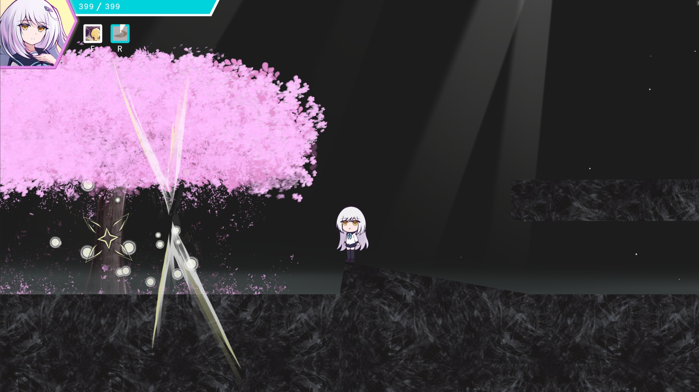
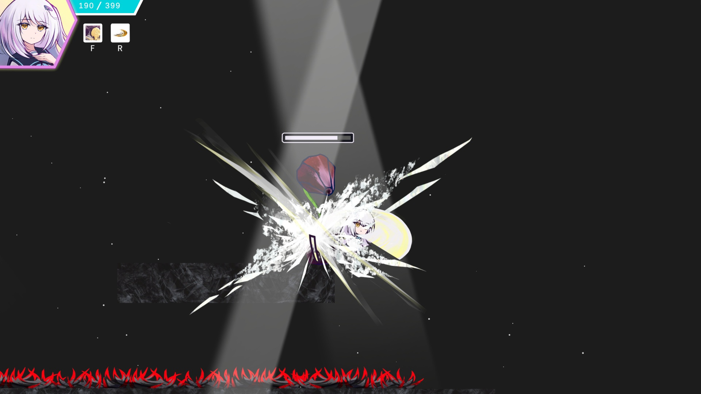
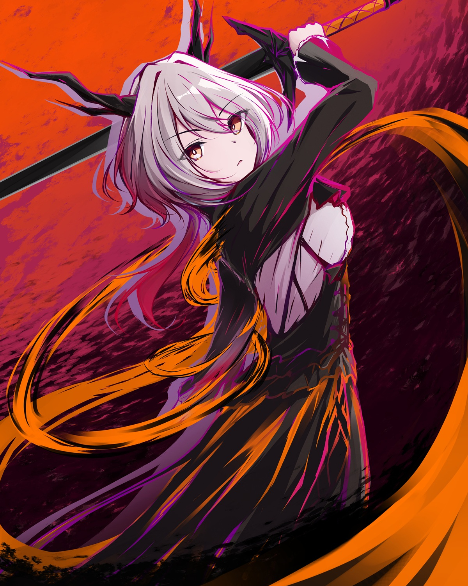
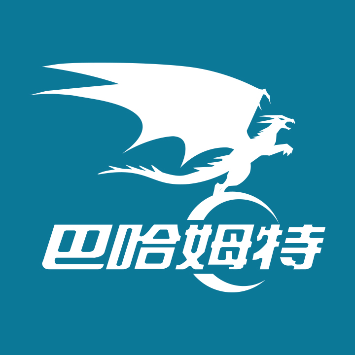

Emotion Hunter：
End of Hopeless
願無末路
絶望のさなかに幸あれ
Steam Demo
This web is preparing.
The free DEMO will be available for download this June!
《Emotion Hunter》試玩版將於六月內於Steam上架。
デモ版は六月の内にダウンロードできます。
Game Content:
This demo is a 2D anime side-scrolling action game, developed individually by KazaRimne.
While the demo features only a single stage with three difficulty levels, the full version will adopt an instance-based system integrated with a visual novel system, allowing players to experience the story as they progress through stages.
The full release will introduce a wider range of difficulty settings with no upper limit, along with character skills that deal damage based on a percentage of the enemy's maximum HP.
My goal is to ensure that both hardcore players seeking the ultimate hitless challenge and casual players who just want to enjoy the story can find their own perfect rhythm.
(The publicly available demo is primarily a showcase of the action combat system and does not include the visual novel system.)
遊戲內容
此遊戲為飾燐音個人製作的動漫風格的2D橫向卷軸獨立遊戲。
Demo只有一個關卡，關卡有三種難度可以選擇，而正式版關卡預計採取副本制，也會加上視覺小說系統，讓玩家在推進關卡的同時也會體驗遊戲劇情。
正式版會有更多種難度可以選擇，而難度無上限，角色也會有一些技能是扣最大生命%數，希望讓追求極致挑戰無傷的硬核玩家，或是單純想看劇情的玩家，都能找到適合的遊玩節奏。
(註：公開的試玩版主要為動作系統展示，無視覺小說文本系統。)
ゲームコンテンツ
このデモは飾燐音個人製作の横スクロールアクションインディーゲームです。
デモ版のステージは一つのみ難易度は三つあります、正式リリースの時はダンジョン制になります。そしてビジュアルノベルシステムを加えます、ダンジョンの他ゲームストーリも体験できます。
正式版では選べる難易度もたくさん増えます、難易度も上限なしになります、ダメージは敵の最大生命パーセントのスキルも加えます。ベテランプレイヤーもゆっくりゲームを進めたい方も楽しめるゲームを作りたいと思います。
（デモ版はアクションシステムの展示のため、ビジュアルノベルシステムはありません。）


Language Support: Chinese, Japanese, English.
Steam Release Timeline
The full version of the game is projected to officially launch on Steam between late 2027 and early 2028.
遊戲世界觀
主角從小時候一直陪伴自己的玩偶中獲得可以進入他人心靈的能力，在潛意識的世界狩獵他人的負面情緒。
在這個世界主角邂逅了另一位擁有相同能力的少女，試玩版中會做為引導玩家的角色，而在正式版中，她會是第二位可操控角色，兩位少女的相遇與玩家的選擇，將會造就不同的結局。
語言支援:中文(繁/簡)、日文、英文。
何時正式上架Steam
遊戲預計於 2027 年底到2028上旬間完成正式發布。
ゲーム世界観
ぬいぐるみから不思議の力をもらえた少女は誰かの無意識の世界へ潜り、マイナスな感情から生まれた怪物を狩る。この不思議な世界でもう一人同じ能力を持つ少女と出会い。
デモ版にはもう一人の少女はガイド役ですが、正式版ではもう一人操作できるキャラクターになります、少女の出会いと選択で違うエンディングへ向かいます。
言語サポート:中国語、日本語、英語。
Steamの正式版リリース時間
2027年の末から2028年上旬頃にリリースします。
Developer KazaRimne:
KazaRimne is an illustrator and game developer from Taiwan.
This demo of Emotion Hunter was created entirely by a single person encompassing everything from Unity C# coding and illustrations to animations and music.
飾燐音について
デモの開発者飾燐音はイラストレーター、ゲーム開発者として活動している台湾人です。
Emotion Hunterデモ版にあるコンテンツUnity C# コード、イラスト、アニメーション、音楽などを含めてすべては飾燐音一人のみで完成しました。
このウェブや、ゲーム、SNSなどにあるすべての日本語テキストは翻訳機ではなく飾燐音本人が書きました。
開發者資訊
飾燐音是來自台灣的插畫家兼遊戲開發者。
《Emotion Hunter》試玩版內所有的Unity C# 編碼、插畫、動畫、音樂等皆由飾燐音本人獨自完成。
Crowdfunding Campaign:
Once the demo is available for download, I will launch a crowdfunding campaign on zeczec, a Taiwan crowdfunding platform, with a funding goal of NT$150,000 (around $5,000 USD) to develop the full version of the game.
募資計畫
Demo開放下載後，將於台灣的募資平台嘖嘖zeczec 募資15萬台幣開發正式版。
クラウドファンディング
デモ版がダウンロードできるようになった後に正式版を開発のために、台湾のクラウドファンディングサイト嘖嘖zeczecで15万台湾円（約75万日本円）をクラウドファンディングします。
嘖嘖zeczec
The purpose of this campaign is to cover my basic living expenses and conduct market analysis, while securing the financial support needed to expand the game’s content. Additionally, I aim to use the completed demo to demonstrate development feasibility, which will help me pitch the project to publishers and ensure the full version can be delivered to everyone in its best form.
クラウドファンディング目的は開発者の基礎生活を保つためとマーケティングリサーチするためです。デモ版とクラウドファンディングでこのゲームの可能性があるかどうか、私自身や、パブリッシャー、プレイヤーのみんなに伝われると思います。
募資目的是維持基本生活開支和市場評估，希望能有資金支持我擴充遊戲內容。也需要透過實際成果來展示開發可行性，以利尋找發行商，讓正式版能夠以更好的形式展現給大家。

Budget Breakdown (NT$150,000)
20% Purchasing Ableton Live Suite and professional studio monitor headphone.
15% Software licenses, Unity Assets, subscriptions (CLIP STUDIO PAINT, Live2D), and other development tools/consumables.
10% Platform and transaction fees (such as Steam onboarding and processing fees).
55% Supporting my basic living expenses during full-time development.
Once the funding goal is met, I will proceed with the development of the full version, even if the crowdfunding campaign is still ongoing.
Stretch Goals (If Funding Exceeds the Goal)
1. Upgrade my current PC hardware (currently running a 3700X + 3060).
2. Outsource professional English translation to ensure top-tier localization.
3. Add Japanese voice acting for the game characters.
4. Add Korean localization (text translation).
If the Crowdfunding Campaign Fails
All pledged funds will be fully refunded to backers. And I will use this demo as a portfolio to apply for game studio positions once again.
關於募資金額的15萬台幣
20%購買 Ableton Live Suite 正版授權及專業監聽耳機。
15%CLIP、Live2D、Unity Asset等軟體、授權、道具及開發耗材。
10%上架Steam等金流處理費。
55%支持全職開發期間的生活。
如果金額達標，募資尚未結束也會確定繼續開發正式版。
如果有多餘的資金
1. 汰換已使用 6 年的舊電腦（3700X + 3060）。
2. 請專業人士外包英文翻譯。
3. 為遊戲角色增加日文語音。
4. 增加韓文翻譯。
如果募資失敗
募資到的金額會全額退費，我則會再挑戰去應徵公司，並以此 Demo 作為作品集的一部分。
クラウドファンディングの15万台湾円の使い方
20%はAbleton Live Suite とモニターヘッドホン。
15%はCLIP、Live2D、Unity Assetなどのサブスクリプション費用、雑費、道具、プラグインなど。
10%はSteamなどに発生する手数料。
55%は開発者の基礎生活を保つためです。
金額が達成したならば、クラウドファンディングの締め切りの日付け前でも正式版を開発すると決定します。
クラウドファンディングが余った場合
1. 今使っているパソコン（3700X + 3060）を変えます。
2. 英語翻訳はプロの翻訳者に任せます。
3. キャラクターに日本語ボイスを付けます。
4. 韓国語翻訳を付けます。
クラウドファンディングが失敗した場合
クラウドファンディングしたお金はすべてお返します、そしてこのデモでもう一度ゲーム会社に応募します。
E-mail: shirakazarin2@gmail.com
